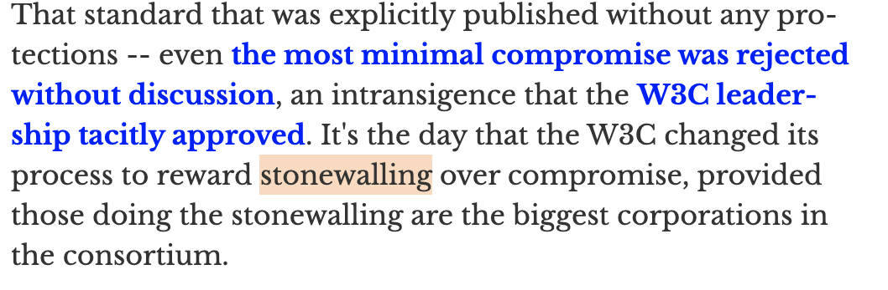
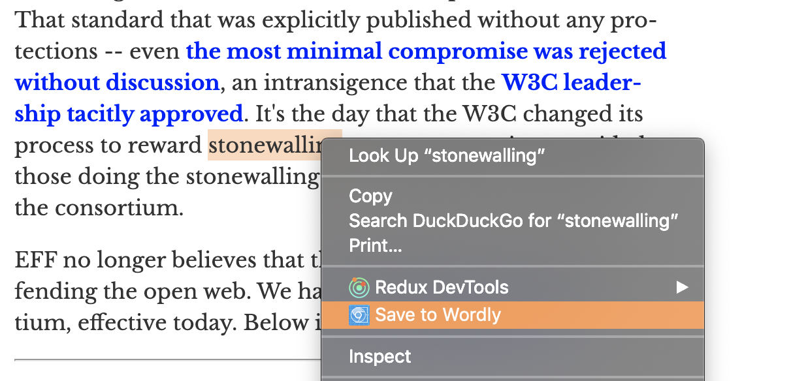
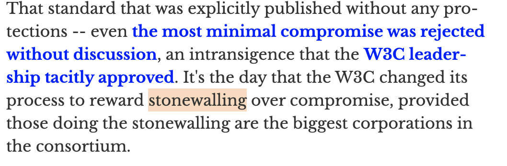
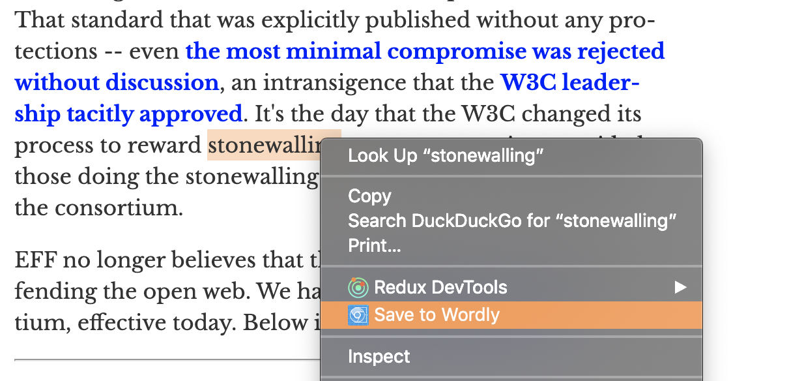

You can start adding words now
Getting started is simple. First select a word you don't know.
Right click with your mouse or trackpad and click on "Save to Wordly"
And you're done. Go to Wordly to see all your words and descriptions.
Getting started is simple. First select a word you don't know.
Right click with your mouse or trackpad and click on "Save to Wordly"
And you're done. Go to Wordly to see all your words and descriptions.